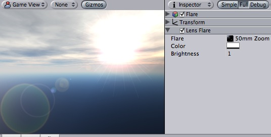
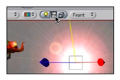

Previous
Previous
Lens flares simulate the effect of lights refracting inside camera lens. They are used to represent really bright lights or, more subtly, just to add a bit more atmosphere to your scene.

A lens flare over the skybox
The easiest way to setup a lens flare is just to assign Flare property of the Light. Unity contains a couple of flares in the Standard Assets package.
Otherwise, create an empty game object (Game Object->Create Empty), add this component to it (Component->Rendering->Lens Flare) and choose the flare in the Inspector.
To see the effect of lens flare in the Scene View, check the Fx button in the toolbar:

Properties
| Property: | Function: |
|---|---|
| A Flare to render. The flare defines all aspects of the lens flare's appearance. | |
| Some flares can be colorized to better fit in with your scene's mood. | |
| How large and bright the lens flare is. |
Details
You can directly set flares as a property of a Light component, or set them up separately as Lens Flare component. If you attach them to a light, they will automatically track the position and direction of the light. To get more precise control, use this component.
A camera has to have a Flare Layer component attached to make flares visible (by default there is a flare layer in cameras, so you don't have to do anything special).
Hints
- Be discrete about your usage of lens flares.
- If you use a very bright lens flare, make sure it's direction fits with your scene's primary light source.
- To design your own flares, you need to create some flare Assets. Start by duplicating some of the ones we provided in the the Lens Flares folder of the Standard Assets, then modify from that.